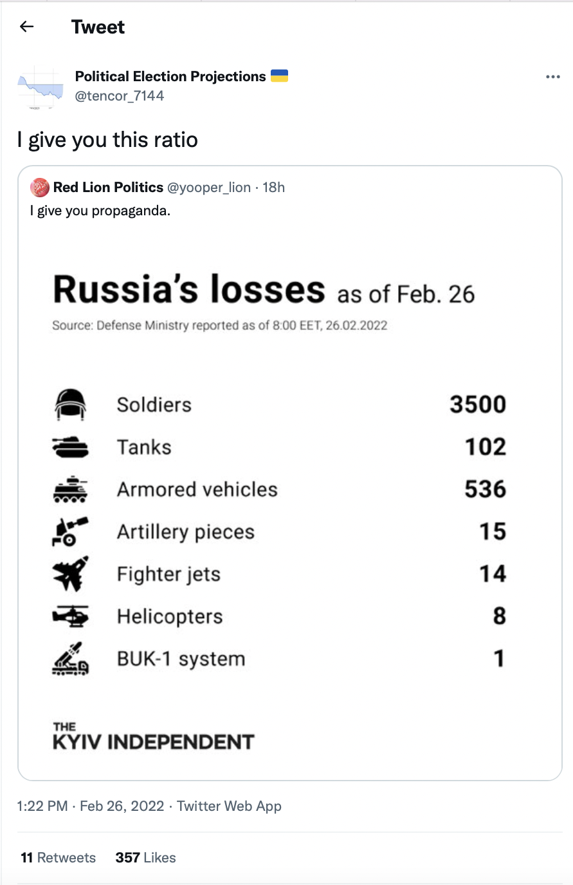

Do you ever feel like you don’t fit in with the kids these days? Do they ever say something that you just can’t wrap your head around? Well, look no further! Here are some examples of common modern english slang.
Since 2019, more and more have been incorporating this word into their Twitter vocabulary. Originally used as a word in mathematics to describe how many times one number goes in another, “Ratio” is now also a term used as a reply on twitter to show disrespect or indifference to another’s opinion. A few ways that people can perform a ratio or express their dislike of someone else’s opinion is through replies such as “You fell off”, “.”(Yes, literally just a period to show indifference), the classic “ratio”, or even a creative way to incorporate ratio into a reply, as seen here.
A word of intriguing origins, this word has slowly been creeping into peoples’ encyclopedias since the early 2010s, until its popularity exploded with the creation of the 2018 game “Among Us”, and its rise to global prominence in 2020. During the Among Us “Boom”, several famous internet content creators played this game with their friends. One of the main game mechanics of Among Us is the meeting between each round, and during these meetings, these content creators would call out the other players whom they found suspicious, hence the word “Sus” (for suspicious).
One of the most versatile words of the Modern English Arsenal, this word can be used in almost any situation. Sad? Stressed? Angry? Scared? Tired? Disgusted? Disappointed? ALL of these emotions AND MORE can be expressed with one four letter word. Prepare to be dazzled:
“Stan” is a verb or noun that originally originated 12 years ago from “Stan” (Warning: This song contains explicit language and references to suicide.), a song by Eminem about a man named Stan who is a huge fan of Eminem. He sends letters and voice recordings to him, but Eminem never writes back, so eventually, he drives off of a bridge with his pregnant wife out of despair. This song built the foundation for this word, which has been extremely popular to express how much you worship and idolize a certain celebrity. An easy way to remember the word Stan is to think of it as a short form for “Stalker-Fan”.
My Sources for this webpage.